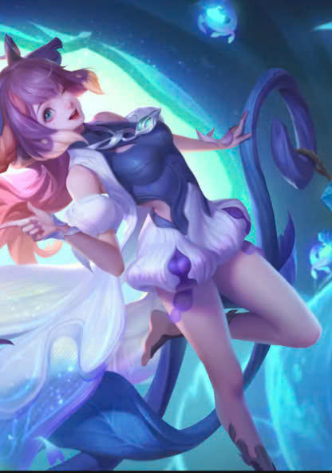
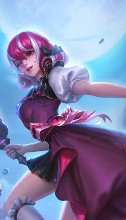

Trong một trận đấu diễn ra thì SP (support) sẽ thường di chuyển cùng với AD (Xạ Thủ) hoặc đi cùng rừng để hỗ trợ "check map". Tuy nhiên nếu là trợ thủ theo thiên hướng
có sát thương phép thì máu sẽ rất mỏng đồng thời sẽ rẩ ít giáp. Như vậy, những vị tướng sát thương phép sẽ chỉ là đi theo buff giáp và cover cho đồng đội thôi chứ không để tự tin lao lên cao để "check map" hay lao vào team địch để mở giao tranh.
Do đó thủy triều thần khiên có thể là một phương án tốt để có thể buff giáp cũng như hỗ trợ cho đồng đội để họ có thể tồn tại
lâu trong giao tranh. Từ đó, tăng tỉ lệ thắng của team mình trong những pha combat sôi máu đến từ cả hai bên.
Lưu ý: Chỉ lên món đồ này khi bên bạn có nhiều tướng băng càn lâu, khó bị sốc dame và team mình là những tướng có thể lì tốt trong những pha combat.
Một số mảnh nhỏ hay trang bị nhỏ nhằm cấu tạo nên đồ lớn là thủy triều thần khiên thì các bạn có thể tham khảo thêm. XEM THÊM

Nên nhớ vị trí trợ thủ đỡ đòn cần linh hoạt đồ trong từng trận đấu. Như đã nói trợ thủ theo thiên hướng là sát thương phép sẽ không thể tự tin lao lên lấy sight trong mọi tình huốngTrong trường hợp mà đồng đội cần thông tin về vị trí team địch thì người chơi đường
trợ thủ không phải lên khiên mà thay vào đó là món đồ Thủy Triều Ma Nhãn.
Trang bị này sẽ cục kì hiệu quả khi team bạn có nhiều tướng tàng hình, ít khi lộ tầm nhìn trên map. Món đồ này có hiệu lực ra sao bạn đọc có thể tham khảo thêm XEM THÊM

Cuối cùng là trang bị hot nhất và hầu như trận đấu nào cũng sẽ được dùng đó chính là Thủy triều mở trói - trang bị có khả năng giải khống chế trong thời gian nhất định.
Món đồ này sẽ rất hiệu quả khi đối đầu với bên kia toàn những tướng có bộ chiêu thức khống chế vô cùng khó chịu như raz, gildur hoặc
những tướng sốc dame trong khoảng thời gian khi bị choáng như veera, darcy.
Về cách dùng cũng như hạn chế của trang bị này bạn đọc có thể tham khảo thêm.
XEM THÊM